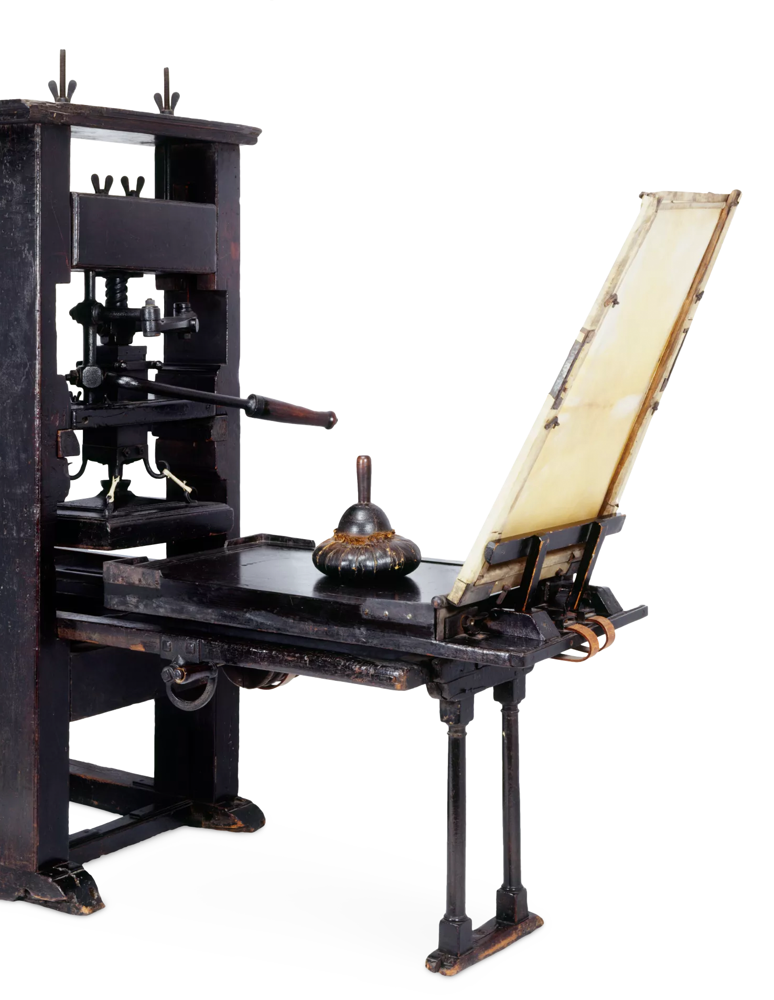

Learning About the Letters You're Reading
Typography Before ‘Typography’ Typography is the term used to describe how type is arranged on a layout. For most designers now, this refers to how type is formatted for displaying on a page, product (e.g. packaging), signage, or website.
Typography as we know it only really came into being with the invention of the printing press (see below), but it actually has deeper origins. Many of the fonts you will see used widely today evolved from much earlier type designs.
In second century BC Mesopotamia, punches and dies were used to stamp letterforms or glyphs onto seals, which makes it a very early form of printing. There is also evidence that similar ‘printing’ techniques were used in Babylon, Crete, and Ancient Greece.
Gutenberg’s Blackletter Revolution By the 12th century in Europe, hand-lettering had developed into an incredibly beautiful art form, practiced by monks who created illuminated manuscripts covered in ornate lettering designs. The style of type which was perfected by the monks is now known as blackletter—a Gothic calligraphy script.
The downside of this hand-lettering technique was that it was also time-consuming and costly, which made it accessible only to a limited group of people.
For many type enthusiasts, typography only really came into being with the invention of the printing press. In Germany, a blacksmith named Johannes Gutenberg created a machine that could process movable type, allowing a large number of sheets to be printed using ink and dies. Mimicking the blackletter type style used in hand-lettered manuscripts, Gutenberg developed the first ever typeface: Blackletter.
“Flippin’ eck, this Blackletter’s hard to read!” The sheer blackness of Blackletter never made it the easiest typeface to read, so it was a breath of fresh air when Roman type styles became popularised in the 15th and 16th centuries.
In 1470 in Venice, Nicolas Jenson designed a highly legible typeface inspired by Ancient Roman type styles. Jenson is one of the earliest Old Style typefaces, which are defined by low contrast between thick and thin strokes.
Old Style Roman typefaces are readable and aesthetically pleasing, which led to them becoming the defining typeface style used throughout this period.
While this renewed legibility was welcome, typesetters were also starting to explore ways of saving space on layouts. Books and other print materials were still not very cheap to produce, so designers focussed on compressing tracking (space between characters) and leading (space between lines). This need for space-saving also led to the development of italic weights.
While typographers mostly use italics today to create hierarchy and difference in their typesetting, Renaissance-era typographers used slanted type styles to make the most of the limited space they had available.
You Old Romantic: 18th Century Serifs Roman typefaces remained enduringly popular for a few centuries, and it wasn’t until the 18th Century that some of the most influential type designers quietly revolutionised the serif as we now know it today.
This was the era of the humanist serifs. It all began with William Caslon, a London-based type designer, who created a more refined version of the Old Style serifs first developed by Jenson some centuries before. Caslon is a romantic and undeniably beautiful typeface, which makes all printed documents of this period appear exceptionally elegant.
A couple of decades later, in the 1750s, another English type designer, John Baskerville, created what is now known as the first Transitional typeface. Compared to Old Style Caslon, Baskerville is recognised for its thinner serifs and moderately higher contrast between thick and thin strokes. It has a more formal, sombre appearance than Caslon, and remains one of the most popular typefaces for typesetting books today.
The tide of typographic change was coming thick and fast during the 18th Century, during the Age of Enlightenment. In France, the Didot family designed one of the first Modern serifs, which are defined by very thin serifs and a very high contrast between thick and thin strokes.